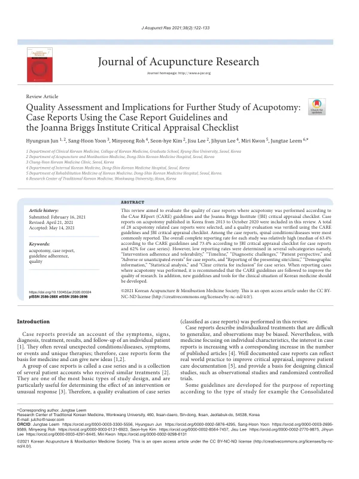

Quality Assessment and Implications for Further Study of Acupotomy: Case Reports Using the Case Report Guidelines and the Joanna Briggs Institute Critical Appraisal Checklist
Jun H, Yoon SH, Roh M, Kim Sh, Lee J, Lee J, Kwon M, Leem J
Journal of Acupuncture Research 38(2):122-133

첫 장 · 오픈액세스First page · open access
논문 소개Summary
증례보고는 한 환자의 증상과 징후, 진단, 치료, 결과, 추적을 적은 글입니다. 예상하지 못한 질환이나 독특한 치료를 드러내 새 생각의 출발점이 되므로 의학의 바탕이 됩니다. 다만 무엇을 적어야 하는지 정해져 있지 않으면 그 값이 떨어집니다. 이 연구는 국내 도침 증례보고가 실제로 얼마나 갖춰 적고 있는지를 두 가지 잣대로 재 본 것입니다.
2013년부터 2020년 10월까지 국내에 발표된 도침 증례보고 28편을 모아, 증례보고 지침(CARE)과 조안나브릭스연구소(JBI) 비판적 평가 점검표로 평가했습니다. 다룬 질환은 척추 계열이 가장 많았습니다.
전반적인 보고율은 비교적 높았습니다. CARE 지침 기준으로 중앙값 63.4%, JBI 점검표 기준으로 증례보고는 73.4%, 증례군은 62%였습니다. 그런데 낮게 나온 항목이 어디인지가 더 중요합니다. 증례보고에서는 중재의 순응도와 내약성, 시간선, 진단의 어려움, 환자의 관점, 이상반응 또는 예상하지 못한 사건이 낮았습니다. 증례군에서는 진료가 이루어진 기관, 인구학적 정보, 통계 분석, 명확한 포함 기준이 낮았습니다.
빠진 것들의 성격을 보면 한 방향이 읽힙니다. 환자가 치료를 어떻게 견뎠는지, 언제 무엇이 일어났는지, 진단이 왜 어려웠는지, 환자 자신은 어떻게 느꼈는지, 그리고 무엇이 잘못되었는지가 빠져 있습니다. 잘된 것만 남고 과정과 부작용이 사라진 글이 많았다는 뜻입니다. 도침이 침보다 침습적이라는 점을 생각하면 이상반응 항목이 낮은 것은 특히 짚어야 할 대목입니다.
저자들은 도침 증례를 보고할 때 CARE 지침을 따를 것을 권했고, 나아가 한의 진료 상황에 맞는 새 지침과 도구를 개발해야 한다고 적었습니다. 이 제안은 뒤에 약침 증례보고 지침 초안과 도침 이상반응 점검표로 이어집니다.
A case report sets out one patient's symptoms and signs, diagnosis, treatment, outcome and follow-up. It reveals unexpected conditions and unusual therapies and so becomes a starting point for new ideas — a foundation of medicine. Its value falls, though, when there is no agreement on what must be recorded. This study measured how completely Korean acupotomy case reports actually report, using two yardsticks.
Twenty-eight acupotomy case reports published in Korea between 2013 and October 2020 were assessed against the CARE guidelines and the Joanna Briggs Institute critical appraisal checklist. Spinal conditions were the most commonly reported.
Overall completeness was relatively high: a median of 63.4% by the CARE guidelines, and by the JBI checklist 73.4% for case reports and 62% for case series. What matters more is where the low scores fell. For case reports these were intervention adherence and tolerability, timeline, diagnostic challenges, patient perspective, and adverse or unanticipated events. For case series they were reporting of the presenting site or clinic, demographic information, statistical analysis, and clear criteria for inclusion.
The character of what is missing points one way. How the patient tolerated the treatment, when things happened, why the diagnosis was difficult, how the patient themselves experienced it, and what went wrong — these are the omissions. Many reports keep what went well and lose the process and the harms. Given that acupotomy is more invasive than acupuncture, the low score for adverse events deserves particular attention.
The authors recommend following the CARE guidelines when reporting acupotomy cases, and go further in calling for new guidelines and tools suited to Korean medicine practice. That proposal leads on to the draft pharmacopuncture case reporting guideline and the acupotomy adverse event checklist.
인용Cite
Jun H, Yoon SH, Roh M, Kim Sh, Lee J, Lee J, Kwon M, Leem J. Quality Assessment and Implications for Further Study of Acupotomy: Case Reports Using the Case Report Guidelines and the Joanna Briggs Institute Critical Appraisal Checklist. Journal of Acupuncture Research. 2021;38(2):122-133. doi:10.13045/jar.2020.00024